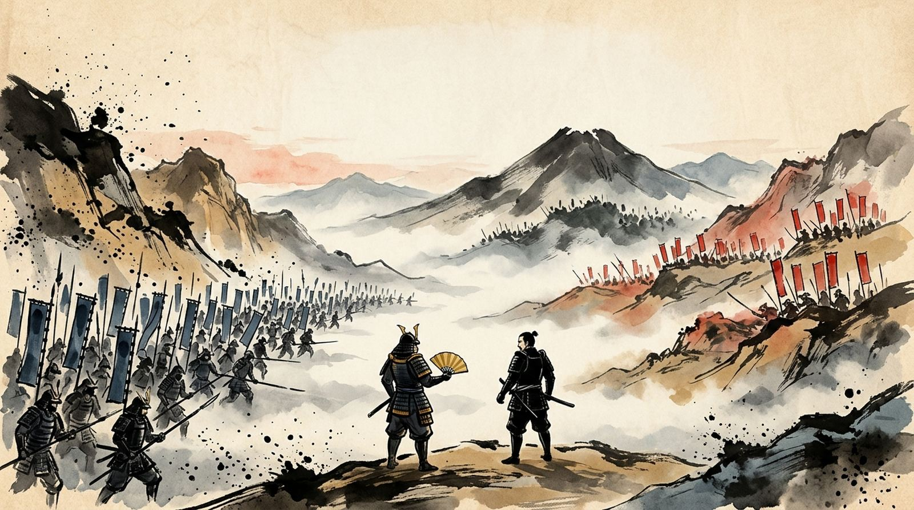
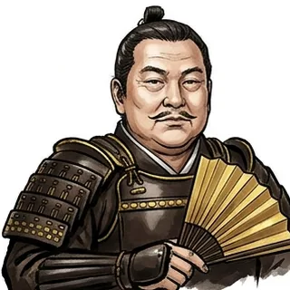
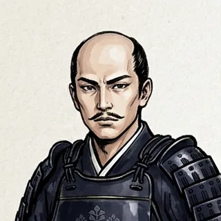
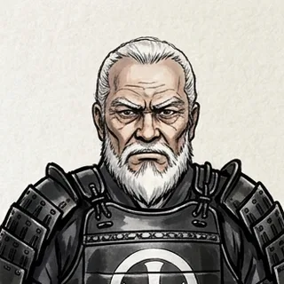
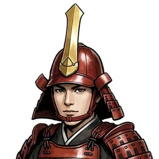
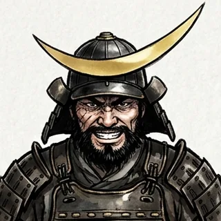
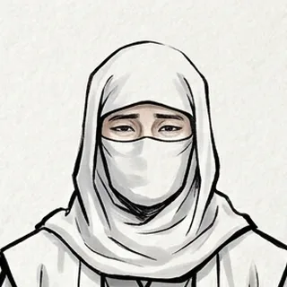

豐臣秀吉死後，五大老之首德川家康勢力日盛。奉行石田三成以「討伐家康」為名，聯合毛利、宇喜多、小西、島津等諸大名舉兵，是為西軍；家康率福島、黑田、細川等豐臣恩顧大名迎戰，是為東軍。兩軍共計十數萬人，在美濃國關原的狹窄盆地中對峙。清晨濃霧未散，松尾山上的小早川秀秋與南宮山的毛利一族按兵觀望——他們的去就，將決定天下歸屬。

兵力雄厚但身處盆地中央，西軍佔據笹尾山、天滿山、松尾山三面高地。你必須在正面強攻的同時，暗中「調略」小早川秀秋與南宮山的吉川廣家。
手握「問鐵砲」：向松尾山開火逼小早川表態——但若他仍心向西軍，將弄巧成拙。

布陣於高地、形成鶴翼包圍之勢，地利盡在我方。但小早川、脇坂四將與南宮山的毛利軍心意未定，必須不斷「督促」、點燃狼煙催促出陣。
若能讓松尾山與南宮山同時殺下，家康將腹背受敵。

未刻，小早川倒戈，西軍各隊相繼潰走。戰場上只剩下按兵不動的島津隊——被東軍數萬大軍團團圍住。
義弘的決定是：不往後逃，而是正面衝破敵陣，殺向伊勢街道。

辰刻，濃霧。照理說先鋒是福島正則——但井伊直政帶著家康的四子松平忠吉，悄悄繞到最前面，搶先向宇喜多隊開火。
只有三支部隊、六個回合，適合第一次玩的人。

辰刻，濃霧。黑田、細川、加藤、田中的大軍直撲笹尾山。石田三成的家老——人稱「鬼左近」的島左近，站在柵欄的最前面。
從這一章開始，可以一路打完西軍名將篇三章，最後有總評定。

午刻，松尾山的一萬五千大軍衝下山來——小早川秀秋倒戈了。早有防備的大谷吉繼，坐在轎上指揮，數度把小早川擊退。
但山腳下的脇坂四將，也在看著風向……